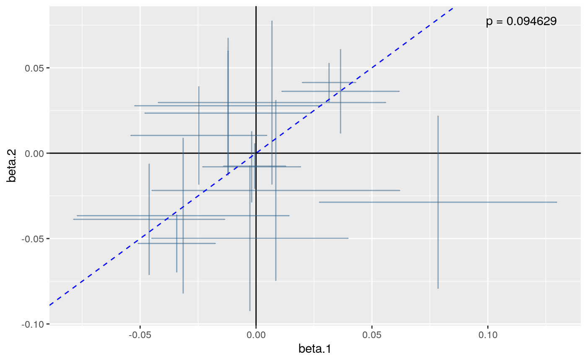
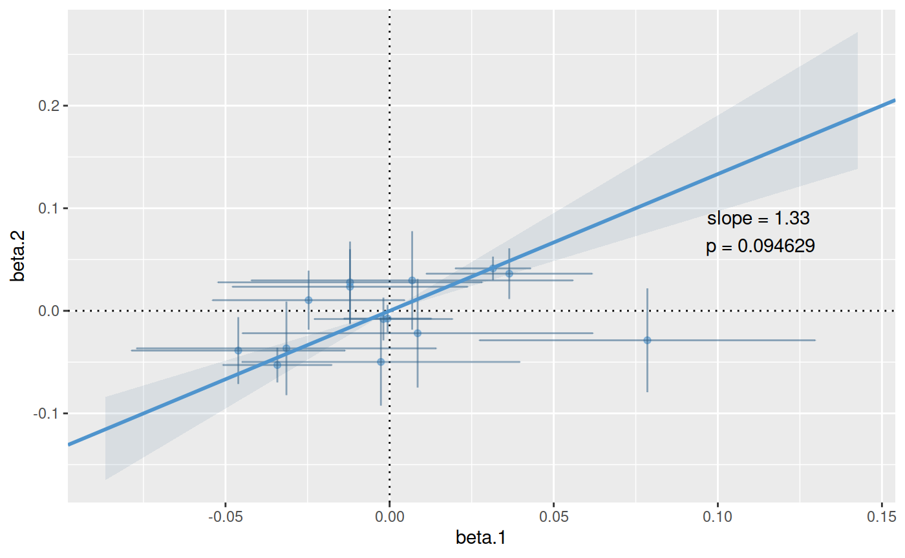

vignettes/a02_proportionality.Rmd
a02_proportionality.Rmdvignette: > % % %
library(mvtnorm) simx <- function(nsnps,nsamples,S,maf=0.1) { mu <- rep(0,nsnps) rawvars <- rmvnorm(n=nsamples, mean=mu, sigma=S) pvars <- pnorm(rawvars) x <- qbinom(1-pvars, 2, maf) } sim.data <- function(nsnps=50,nsamples=200,causals=floor(nsnps/2),nsim=1) { cat("Generate",nsim,"small sets of data\n") ntotal <- nsnps * nsamples * nsim S <- (1 - (abs(outer(1:nsnps,1:nsnps,`-`))/nsnps))^4 X1 <- simx(nsnps,ntotal,S) X2 <- simx(nsnps,ntotal,S) Y1 <- rnorm(ntotal,rowSums(X1[,causals,drop=FALSE]/2),2) Y2 <- rnorm(ntotal,rowSums(X2[,causals,drop=FALSE]/2),2) colnames(X1) <- colnames(X2) <- paste("s",1:nsnps,sep="") df1 <- cbind(Y=Y1,X1) df2 <- cbind(Y=Y2,X2) if(nsim==1) { return(new("simdata", df1=as.data.frame(df1), df2=as.data.frame(df2))) } else { index <- split(1:(nsamples * nsim), rep(1:nsim, nsamples)) objects <- lapply(index, function(i) new("simdata", df1=as.data.frame(df1[i,]), df2=as.data.frame(df2[i,]))) return(objects) } } set.seed(46411) data <- sim.data()
## Generate 1 small sets of dataThe code below first prepares a principal component object by combining the genotypes in the two dataset, then models the most informative components (the minimum set required to capture 80% of the genetic variation) in each dataset, before finally testing whether there is colocalisation between these models.
## run a coloc with pcs library(coloc)
## This is a new update to coloc.pcs <- pcs.prepare(data@df1[,-1], data@df2[,-1]) pcs.1 <- pcs.model(pcs, group=1, Y=data@df1[,1], threshold=0.8)
## selecting 14 components out of 50 to capture 0.8065497 of total variance.pcs.2 <- pcs.model(pcs, group=2, Y=data@df2[,1], threshold=0.8)
## selecting 14 components out of 50 to capture 0.8065497 of total variance.ct.pcs <- coloc.test(pcs.1,pcs.2) plot(ct.pcs)

The plot shows the estimated coefficients for each principal component modeled for traits 1 and 2 on the x and y axes, with crosses showing the 95% confidence intervals. The points lie close to the line through the origin, which supports a hypothesis of colocalisation.
A little more information is stored in the ct.pcs object:
ct.pcs## eta.hat chisquare n p.value.chisquare
## 1.33605972 20.02337592 14.00000000 0.09462891## eta.hat chisquare n p.value.chisquare
## 1.33605972 20.02337592 14.00000000 0.09462891
## Named num [1:4] 1.3361 20.0234 14 0.0946
## - attr(*, "names")= chr [1:4] "eta.hat" "chisquare" "n" "p.value.chisquare"The best estimate for the coefficient of proportionality, \(\hat{\eta}\), is 1.13, and the null hypothesis of colocalisation is not rejected with a chisquare statistic of 5.27 based on 7 degrees of freedom (\(n-1\) where the \(n\) is the number of components tested, and one degree of freedom was used in estimating \(\eta\)), giving a p value of 0.63. The summary() method returns a named vector of length 4 containing this information.
If more information is needed about \(\eta\), then this is available if the bayes argument is supplied:
ct.pcs.bayes <- coloc.test(pcs.1,pcs.2, bayes=TRUE)
## ..............plot(ct.pcs.bayes)

ci(ct.pcs.bayes)
## $eta.mode
## [1] 1.333878
##
## $lower
## [1] 0.9704671
##
## $upper
## [1] 1.906443
##
## $level.observed
## [1] 0.9469009
##
## $interior
## [1] TRUEIt may be that specific values of \(\eta\) are of interest. For example, when comparing eQTLs in two tissues, or when comparing risk of two related diseases, the value \(\eta=1\) is of particular interest. In proportional testing, we can use Bayes Factors to compare the support for different values of \(\eta\). Eg
## compare individual values of eta ct.pcs <- coloc.test(pcs.1,pcs.2, bayes.factor=c(-1,0,1))
## ..............bf(ct.pcs)
## values.against
## values.for -1 0 1
## -1 1.000000e+00 9.331207e-12 1.046155e-32
## 0 1.071673e+11 1.000000e+00 1.121136e-21
## 1 9.558809e+31 8.919522e+20 1.000000e+00